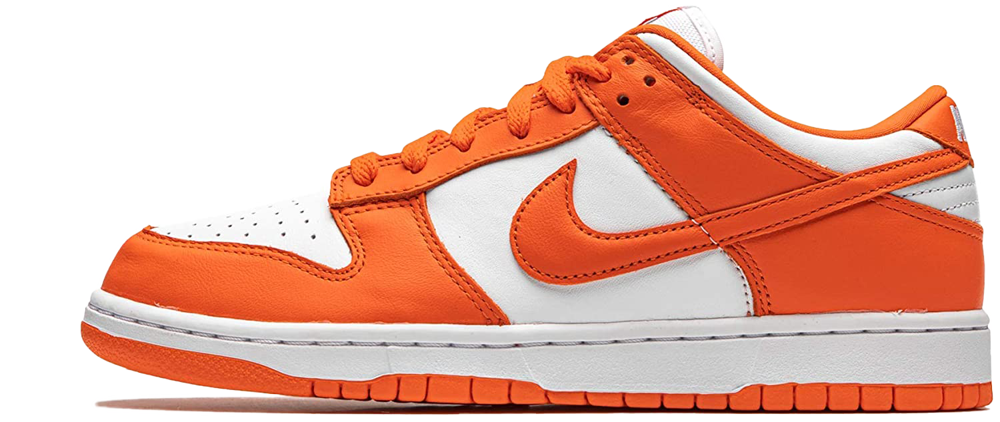

DUNK
THE NIKE DUNK IS ARGUABLY ONE OF THE MOST POPULAR SNEAKERS IN THIS COLLECTION. IT WAS RELEASED IN 1985 AND HAS BECOME A STAPLE BOTH AS A SKATE AND BASKETBALL SNEAKER. THE DUNK IS EXTREMELY POPULAR IN BOTH THE LOW TOP AND HIGH TOP VARIANTS. IT HAS BEEN INCLUDED IN COLLABORATIONS WITH TRAVIS SCOTT, OFF-WHITE, AND MOST RECENTLY, BEN & JERRY’S. THE NIKE DUNK SEEMS TO HAVE COUNTLESS RELEASES, WITH NEW COLORWAYS COMING OUT EVERY MONTH OR SO.
INITIAL RELEASE: 1985
RELEASES: 390
COLORWAY: SYRACUSE
CURRENT RESALE PRICE: $605 (STOCK-X)